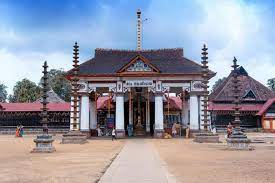

KOTTAYAM

Kottayam, is a city in the Indian state of Kerala. Flanked by the Western Ghats on the east and the Vembanad Lake and paddy fields of Kuttanad on the west, Kottayam is a place that is known for extraordinary qualities. It is the district headquarters of Kottayam district, located in south-west Kerala. Kottayam is located in the basin of the Meenachil River at an average elevation of 3 metres (9.8 ft) above sea level, and has a moderate climate. It is located approximately 155 kilometres (96 mi) north of the state capital Thiruvananthapuram. On 25 June 1989, Kottayam was declared as first '100% literate town' in India by Mr. N.P. Sahi (Hon Union Minister of State for Education).
Kottayam is also called as "City of Letters" as many of the first Malayalam daily newspapers, like Deepika, Malayala Manorama, and Mangalam, were started and are headquartered in Kottayam, as are a number of publishing houses.
The royal palace of the Thekkumkur ruler was protected by a fort called Thaliyilkotta. It is believed that the name Kottayam is derived from a combination of the Malayalam words kotta which means fort (Thaliyilkotta) and akam which means inside. The combined form, Kottaykkakam, can be translated as "inside the fort".
Tourist Spots

Illikkal Kallu

Elaveezhapoonchira

Vaikom Mahadeva Temple